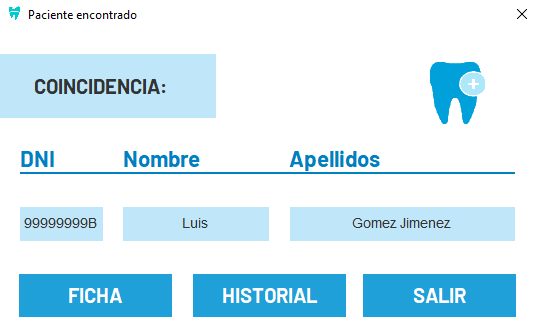
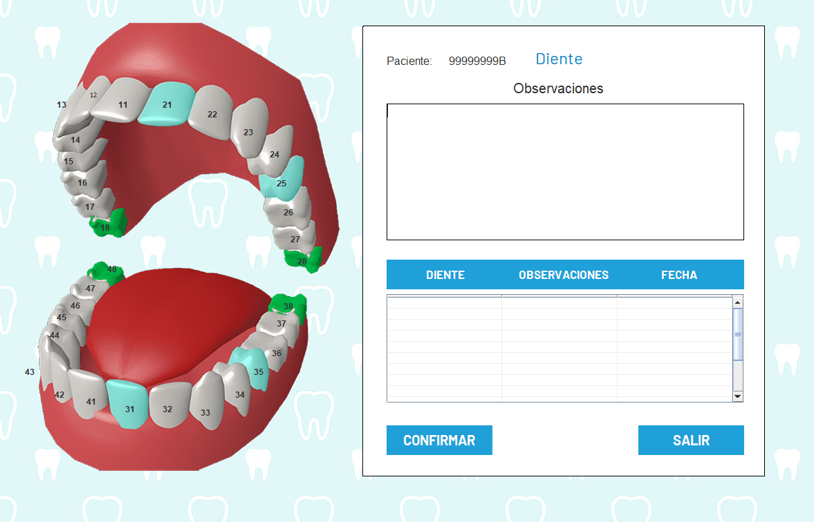
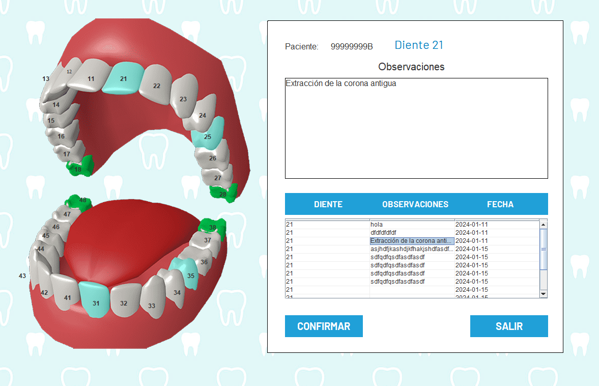
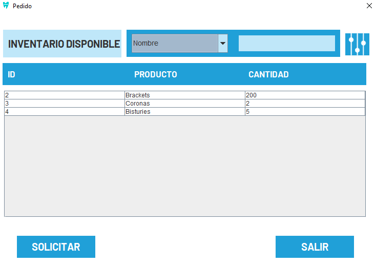
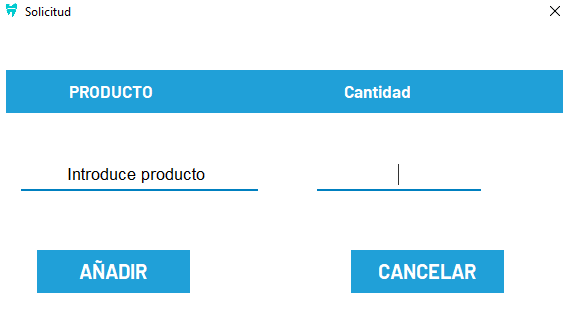

Aparecerá una tabla con la información de todos los pacientes, en la que se podrá filtrar por varios campos, de forma que al seleccionar el elemento, se abrirá la información del mismo y la posibilidad de abrir el odontograma del paciente pulsando en el botón del diente, en la esquina superior derecha.
Aparecerá una boca, en la que si un diente tiene un tratamiento realizado, aparecerá coloreado. El mismo tendrá una tabla que sacará la información del diente pulsado, apareciendo así todo lo que se le ha realizado, con la fecha del tratamiento.
Si selecciona un diente con un tratamiento asignado o algo realizado, se mostrará de la siguiente manera:
Podemos observar que al seleccionar una celda, se muestra en el cuadro de observaciones. Al intentar escribir en esta, se borrará, para poder introducir un campo nuevo.
Al clicar en solicitar material, se abrirá una ventana con el inventario disponible:
Para solicitar el material es tan fácil como escribir el producto que quiera pedir al administrador y la cantidad del mismo:
